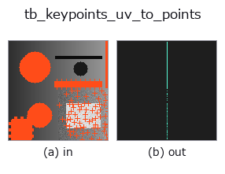

typed op• 資料種類:keypoints → points
• 呼叫:fullseye.apply(img, "tb_keypoints_uv_to_points", a=0.5, b=0.5)(2-D 的模型是一張圖 + 兩個純量旋鈕 a,b∈[0,1])

*圖為在 128×128 合成輸入上實際執行的輸出。左為輸入，右為輸出。點雲以俯視散點顯示(亮度 = z)，一維序列為折線，體資料為沿 z 的最大值投影，影片為中間影格，複數影像為振幅；無法成像的回傳值直接顯示數值。*
*旋鈕 a 不改變輸出(實測: 0.1 / 0.5 / 0.9 相同)。*
*旋鈕 b 不改變輸出(實測: 0.1 / 0.5 / 0.9 相同)。*
階段(前置運算子 → 本運算子，由左至右):
▸ tb_keypoints_uv_to_points: 處理階段 (文件網站)
換別的影像(合成場景 / 照片 / 硬幣。上排為輸入，下排為對應輸出。旋鈕取預設):
▸ tb_keypoints_uv_to_points: 其他輸入影像 (文件網站)
影像座標 (N,2) = (u, v) → 點雲 (N,3) = (z, y, x)。keypoints 的出口。
op 名中寫明軸的約定，是因為在本 repo 中產出 keypoints 的 match3d.project_points 回傳 (u, v) = (行, 列)，而產出 points 的 fuse3d.to_points(voxel) 回傳 (z, y, x) —— 若直接當作「前 2 行」連接，就會在不拋出例外也不出現 NaN 的情況下列行互換。這裡明確地按 y = v、x = u 交換後再傳遞。
與 points_zyx_to_keypoints_uv 往返時 bit 一致(傳入 z 的方向)。
Args:
keypoints: (N, 2) 的 (u, v)。
z: 放置平面的 z(純量，或 (N,) 的陣列)。
Returns:
(N, 3) float64 的 (z, y, x)。
Raises:
ValueError: 形狀不正確 / 非有限 / z 的長度不一致。
橋接到 2-D 演化註冊表的 reprconv op keypoints_uv_to_points。實作相同，只是呼叫慣例改為 op(v, a, b)。此 op 沒有可調參數，a 與 b 都不使用。
• 範例資料目錄(下載 URL / 授權) —— 2-D 用 skimage.data(BSD/公有領域)加合成圖,3-D 給出真實資料源(Stanford/PDS 等)的下載 URL。
• 運算子來歷與參考文獻 —— 該運算子族所依據的研究/方法出處。
下面的程式已確認可以執行(與圖相同的輸入)。在 Studio 說明中，此區塊會變成按鈕，可當場載入並執行。
img_to_keypoints 0.50 0.50 tb_keypoints_uv_to_points 0.50 0.50
下面的範例呼叫的是底層帳本運算子 keypoints_uv_to_points。此橋接運算子只是把同一實作適配為 fn(v, a, b) 慣例，行為完全相同(只是呼叫形式不同)。
• representation_roundtrip — py -3.11 examples/representation_roundtrip.py
points 作為輸入)identity · tb_points_to_voxel · tb_estimate_point_normals · tb_iss_keypoints · tb_project_points · tb_render_point_depth · tb_statistical_outlier_removal · tb_radius_outlier_removal
typed)tb_points_to_voxel · tb_estimate_point_normals · tb_iss_keypoints · tb_project_points · tb_render_point_depth · tb_statistical_outlier_removal · tb_radius_outlier_removal · tb_voxel_grid_downsample
*Provenance: ops.py — 2D 運算子登記表。本條目由 tools/opdocs.py md 自動產生(請勿手動編輯)。*
© 2026 Kazufumi Furuse — Fullseye operator documentation. Licensed under Apache-2.0.